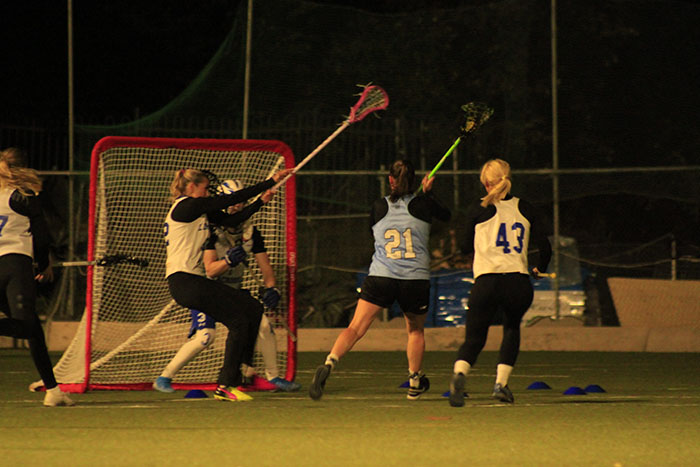
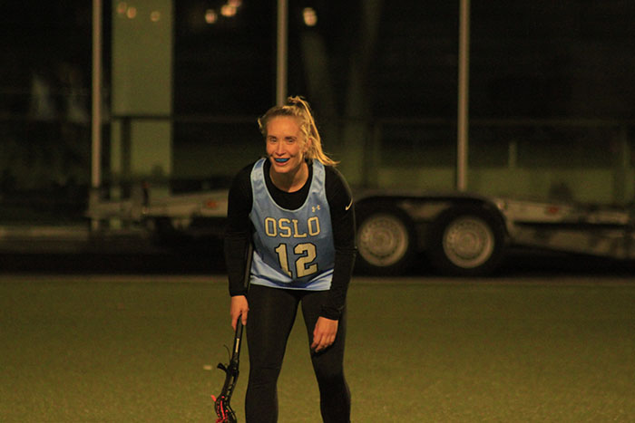

Et godt miljø

Godt lagarbeid

God trening
Et godt miljø
Godt lagarbeid
God trening
Hva er lacrosse?
Lacrosse er en idrett med lang og stolt historie, helt tilbake til 1600-tallet. Dens opphav var som et spill
mellom ulike grupper av urfolk i Nord Amerika og idrettens seremonier er fremdeles preget av deres rike
tradisjoner.
Idretten er en lagbasert ballsport som spilles med ti spillere på hvert lag, på en bane omtrent av samme
størrelse som en vanlig fotballbane. Det finnes også innendørs lacrosse, kalt indoor eller box lacrosse.
Spillerne er utstyrt
med køller med en nettlomme i enden (la crosse) som brukes til å fange og kaste
ballen mellom spillerne og i mål. Taktisk minner spillet mye om ishockey, hvor du har et offensivt spill som
handler om å sette opp spill og skaffe
medspillere åpne skudd, mens keeper er beskyttet av en vernet
sone rundt målet. For herrer er spillet er svært fysisk og det brukes derfor beskyttelsesutstyr og hjelm.
For kvinner er spillet noe annerledes.
Nettlommen på crossen er ikke tillatt så dyp som for gutter –
dette gjør det enklere å slå ballen ut. Reglene for fysisk kontakt er også mye strengere og jentene bruker
dermed mindre beskyttelsesutstyr.
Lacrosse i Norge har i dag ca 1.000 aktive spillere i forbundets 16 medlemsklubber. Klubbene er i stor grad
tilknyttet universitet og høyskoler, men det er også frittstående klubber. Seriespillet foregår i flere byer
som helgeturneringer, med
kvalifisering til Norgesmesterskapet som er i juni. I tillegg er det
studentmesterskap og mindre turneringer. Forbundet organiserer landslag både for herrer og kvinner, med
deltagelse i EM og VM, med gode resultater.
Kontaktinformasjon
Stina Bjørnenæs
stina@oslolax.no
12.00-15-00 man-tor 77 55 66 22